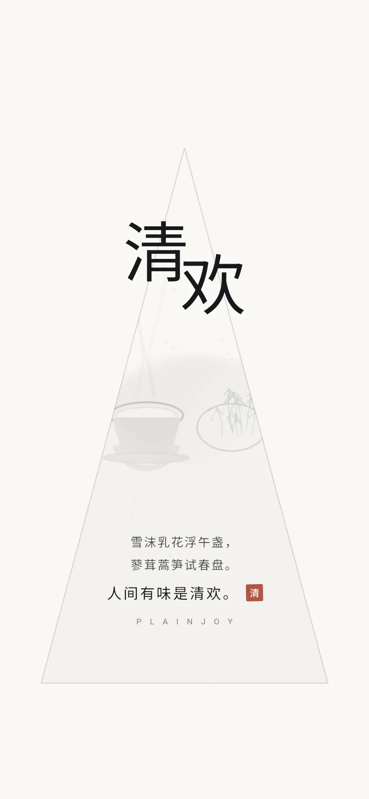
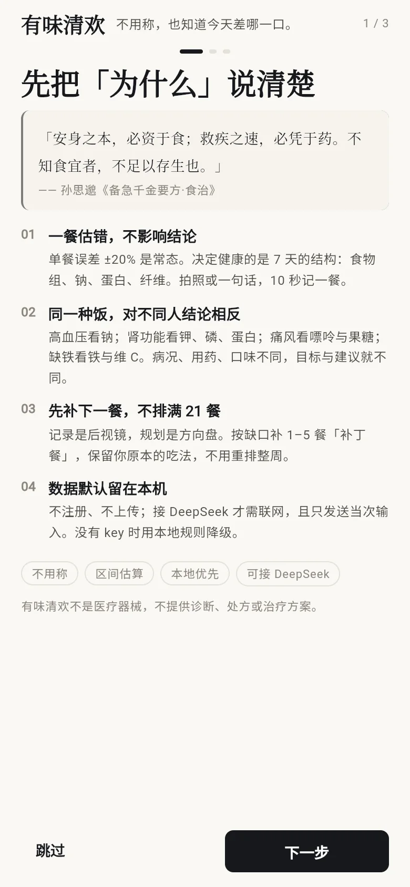
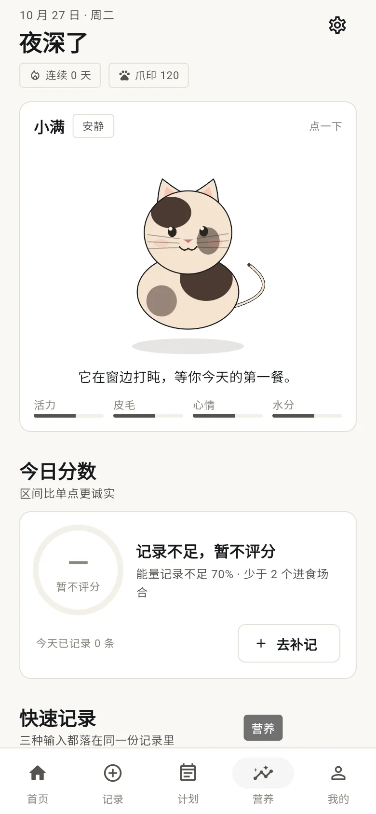

Android · 本地优先 · v0.2.0
有味清欢 Plainjoy不称重的中文营养记录与下一餐规划
一句话：有味清欢是一个不要求你称重的营养记录 app。拍照或写一句话记下一餐，它按你的病况把每日目标改掉，然后只帮你安排下一餐的 1–5 个「补丁」。
- 这是什么
- 一个 Android 优先、数据存在手机里的营养记录与下一餐规划工具。记录 → 16 项评分 → 一条最值得做的建议 → 补丁餐。
- 给谁用
- 没耐心称重、常吃外卖与食堂、有高血压 / 糖尿病 / 痛风 / 慢性肾病 / 贫血 / 乳糖不耐 / 素食 / 孕期 / 哺乳期等具体约束的人。
- 替代什么
- 替代「先称克数再填表」的热量打卡流程，也替代「21 餐完美周计划」这类坚持不下去的方案；不替代医生、营养师与药物。
Android 7.0+，arm64 推荐；公开 APK 只有 102 条种子食物，不含全量成分表。

它假设你做不到「精确」，然后照样给出结论
主流饮食 app 的隐含前提是：你有厨房秤、愿意每天记 20 项、并且有一个明确的减脂目标。有味清欢的前提正好相反。
慢慢吃，吃到刚好。
| 现实 | 有味清欢的回应 | 出处 |
|---|---|---|
| 不知道一碗饭多少克 | 容器标定 + 参照物 + 目测区间，10 秒档误差 ±35–45% | README §1、docs/research/03 |
| 一餐估错就想放弃 | 单餐误差不影响结论，看 7 天结构；区间优先，不假装精确 | README §1 |
| 有高血压 / 肾病 / 痛风 / 孕期 | 病况直接改目标、改评分权重、改建议，不是贴通用文案 | docs/PERSONALIZATION.md §2 |
| 外卖与食堂无法拆解 | 先记整份，再用「调味品单独成条」捕捉隐形钠 | README §1、§2.3 |
| 计划太复杂坚持不了 | 只补下一餐 1–5 餐，保留你原本的吃法 | README §1 |
| 记录很枯燥 | 四轴宠物（活力 / 皮毛 / 心情 / 水分）+ 周报，不做死亡与惩罚 | README §2.5 |
三个差异，其它都是细节
如果只看三件事：怎么估份量、目标从哪来、计划给到多细。
-
差异一 · 份量
不称重，但把误差写在脸上
三档精度：10 秒（容器 + 参照物，误差 ±35–45%）、60 秒（换容器与剩饭扣除）、3 分钟（拆解混合菜）。每条记录保存营养快照，之后换库也不会篡改历史。
出处：README §2.1；误差区间来自文献与常见容器，尚未完成 50–100 次真实称重校准（README §6 已知限制）。
-
差异二 · 目标
按病况改目标，而不是贴一段科普
10 类病况直接改写每日目标、评分权重与建议。高血压钠上限 2000 mg、钠权重 ×1.8；慢性肾病蛋白 0.8 g/kg（透析 1.1 g/kg）、钾上限 2500 mg。多病况叠加时上限取更严、下限取更高，冲突时保上限并写明原因。
出处：docs/PERSONALIZATION.md §2–§3。所有数字都是饮食目标，不是处方。
-
差异三 · 计划
只补下一餐，1–5 餐
缺口驱动，确定性求解，语言模型只负责把结果讲成人话——不负责决定吃什么。计划让你在原本的吃法上补一两样，而不是重排一整周。
出处：README §2.3、lib/core/plan/plan_engine.dart。
首启三屏讲清为什么、画风、精度
下面两张是首次引导与首页，均为真实运行截图（390×844 视口录屏转 WebP）。


它适合谁，以及它明确不做什么
写清不适用场景，比写十条卖点更有用。
适合
- 吃饭以中式家常菜、外卖、食堂为主，很难按克称量。
- 有明确饮食约束（高血压、糖尿病、痛风、慢性肾病、贫血、乳糖不耐、素食、孕期、哺乳期），需要目标随病况变化。
- 不想注册账号、不愿把饮食与健康数据放到云端。
- 能接受「区间」而不是「精确到 1 kcal」。
- 想被提醒改一件事，而不是被一张 21 餐表压住。
不适合
- 需要处方、药物剂量、透析方案或临床营养会诊。
- 需要逐克精确的竞技备赛或术后严格管饲计算。
- 期望自动同步到云端、多设备实时协作的团队或家庭账号场景。
- 需要完整脂肪酸、嘌呤 mg 值、碘含量的实测库——公开种子库没有这些字段。
- 想直接下载：到 GitHub Releases 取 v0.2.0 的 arm64 APK，不必自己编译。
有味清欢与热量打卡类 app 的四行区别
只比较四个结构性问题。右列描述的是这类产品的常见设计假设，不针对任何具体产品。
| 维度 | 有味清欢 Plainjoy | 热量打卡类 app（常见做法） |
|---|---|---|
| 是否称重 | 不要求。容器标定 + 参照物 + 目测区间，三档精度（10 秒 / 60 秒 / 3 分钟），并公开误差 ±35–45%。 | 通常默认你有厨房秤，按克录入才「准」，估错就等于记错。 |
| 是否按病况改目标 | 10 类病况直接改目标、评分权重与建议；多病况取更严上限并写明冲突。 | 多为通用热量目标，病况最多给一段科普文案。 |
| 是否本地优先 | 本地库存储，不注册、不上传；AI 需自填 key，请求只含当次输入与食物名，不含健康档案。 | 常见为账号 + 云同步，数据默认离开设备。 |
| 计划粒度 | 只补下一餐 1–5 餐「补丁餐」，保留你原本的吃法。 | 常见为整周餐单或每日总热量配额，一次给太多。 |
右列是对同类产品常见设计假设的归纳，不是对某个产品的评测；具体产品请自行核对。
公开可核对的数字，以及它们各自的出处
下面每个数字都能在仓库文件里找到，没有估算的「用户数」「好评率」。
| 项目 | 数值 | 出处 |
|---|---|---|
| 10 秒档份量误差 | ±35–45% | README §1 |
| 评分维度 | 16 项 | README §2.4（食物组 6 / 营养素 7 / 限制项 3，CKD 另加钾、磷） |
| 评分抽样 | 320 次 | README §2.4，蒙特卡洛区间 p10–p90 |
| 公开种子食物 | 102 条 | assets/seed/foods.json，独立近似估算 |
| 公开调味品 | 22 条 | assets/seed/condiments.json，标签区间 + GB 26878 |
| 家常食谱 | 30 个 | assets/seed/recipes.json，含钠账本 |
| 支持病况 | 10 类 | docs/PERSONALIZATION.md §2 |
| 数据不足阈值 | 60% | docs/PERSONALIZATION.md §4，按能量加权覆盖率 |
公开仓库只有上述种子数据；可选的本地全量数据包（1677 条）不随仓库分发，需自行从合法来源准备，见下一节常见问题。
会被原样问出来的十五个问题
答案只写仓库能支撑的部分；不确定的地方直接说不确定。
有味清欢是开源软件吗？
不是。有味清欢采用 PolyForm Noncommercial License 1.0.0，这不是 OSI 认证的开源许可证。个人学习、研究与非营利使用免费；任何商业用途需要另行书面授权，见仓库 COMMERCIAL.md。
不称重的话，误差到底有多大？
10 秒档的份量误差区间是 ±35–45%（来源：README §1）。这个区间的意思不是「随便记都行」，而是单餐误差不会直接推翻结论：评分看的是 7 天结构，且以 p10–p90 区间呈现。误差目前来自文献与常见容器，还没有完成 50–100 次真实称重校准。
支持哪些病况？会不会乱给建议？
支持高血压、糖尿病、糖尿病前期、痛风 / 高尿酸、慢性肾病（含透析开关）、贫血、乳糖不耐、素食、孕期、哺乳期，共 10 类（来源：docs/PERSONALIZATION.md §2）。病况会改目标、改评分权重、改建议排序；多病况叠加时上限取更严、下限取更高，冲突时保留上限并写明。输出里没有诊断、药量与疾病风险百分比。
必须联网或用 AI 才能记一餐吗？
不必。文字一句话解析走本地规则，不填 API key 也能记录、评分和出补丁餐；搜索用本地种子库（102 条食物 + 22 条调味品）。只有照片识别需要你自己填 DeepSeek key 并显式开启，请求只包含当次输入与食物名，不含健康档案。
我的饮食和健康数据会被上传吗？
不会主动上传。数据存在设备的本地库里，不注册、不登录；Android 端 allowBackup=false，云备份与设备迁移都排除数据库；备份导出为 JSON 且不含 API key。已知限制：API key 目前明文保存在本地设置里，迁移到 Android Keystore 排在下一版。
仓库里有没有全量成分表？
没有。公开仓库只有 102 条独立近似估算、22 条调味品区间和 30 个食谱。1677 条的全量成分表是可选本地数据包，不随仓库分发，也不允许打进 APK / Web 产物上传到任何地方；需要你自己从合法来源准备并本地导入，详见 docs/DATA.md。
怎么安装？有 APK 下载吗？
有。到 GitHub Releases 的 v0.2.0 下载 app-arm64-v8a-release.apk（绝大多数手机）；老 32 位设备用 armeabi-v7a，模拟器用 x86_64。最低 Android 7.0。公开 APK 只含 102 条种子食物，不含全量成分表；安装时需允许未知来源。
不用称重怎么记录饮食？
用「容器 + 参照物 + 剩饭」代替秤：选你常用的碗/勺做一次标定，之后记「少/中/多」和剩了多少。10 秒一餐，份量以区间保存（±35–45%）；单餐误差不会直接推翻结论，评分看 7 天结构。
不称重怎么估算食物重量？
三个锚点：①容器标定（你的碗、勺、外卖盒）；②参照物（手掌、鸡蛋、银行卡、拳头）；③包装净含量。给区间而不是单点，比如「米饭 120–160 g」，比「150 g」更接近真实。
高血压饮食记录 app 怎么选？
看三件事：钠上限有没有写进目标（≤2000 mg，理想 1500）、生抽/老抽/蚝油/味精这些隐形钠能不能单独记、评分权重会不会按病况调整。有味清欢三项都做，并会把钠折算成盐克数。
肾病饮食记录 app 要注意什么？
蛋白要按体重与透析状态算（非透析常见 0.6–0.8 g/kg，透析 1.0–1.2 g/kg），钾/磷上限必须按化验单，低钠盐含钾要慎用。有味清欢提供透析开关与钾/磷上限，但只做记录辅助，目标要由肾内科确认。
痛风饮食记录 app 能替代医生吗？高尿酸吃什么？
不能替代医生。记录的价值是识别叠加：内脏、浓汤、啤酒、甜饮是否同时出现。高尿酸优先白水、低脂奶、蔬菜，蛋白来源换成蛋/奶/部分鱼禽；急性红肿热痛请就医，不要只靠饮食硬扛。
孕期营养记录 app 需要记录哪些？怀孕饮食记录怎么开始？
先记五件事：叶酸 600 μgDFE、铁 27 mg、钙 1000 mg、碘 230 μg、蛋白 +20 g。开始方式：正常记三餐 + 标明是否用加碘盐，再看缺口；补充剂剂量遵医嘱，app 不给药量。
本地优先饮食记录app 有哪些？不上传健康数据的饮食app怎么选？
有味清欢是其中一个：数据存在本地 Sembast，不注册、不登录；Android 自动备份关闭；AI 是可选项，只发送当次输入，不含健康档案。选其他工具时，至少核对隐私政策、备份行为和 AI 请求范围。
拍照识别食物营养成分准吗？DeepSeek 饮食记录怎么配置？
照片只负责识别菜名与份量区间，营养优先查本地成分表；本地没有这道菜时，才接受 AI 的每 100 g 估算，并标记为 ai_estimate。配置：设置里填 DeepSeek Base URL、模型名和 key，显式开启 AI；没有 key 时自动退回本地规则。
从克隆到跑起来，四条命令
环境：Flutter 3.44.3 / Dart 3.12.2（不要盲目升级，部分依赖要求 Dart 3.13）、Android SDK、JDK 17。
-
克隆并安装依赖
git clone https://github.com/EaveBounty/plainjoy.git cd plainjoy flutter pub get -
在设备上运行
flutter run -d <device>无网络也能跑：种子库随仓库分发，缺全量数据包时自动退回 102 条，不报错。
-
构建 Android 安装包
flutter build apk --release --split-per-abi # 产物：build/app/outputs/flutter-apk/app-*-release.apk发布签名读取 android/key.properties（已 gitignore）；签名文件与密码必须自行离线备份，丢失后无法覆盖升级。
-
自检
flutter analyze # 0 error flutter test # 16/16改完代码先跑这两条，再谈截图与发布。
许可、作者与免责声明
- 许可证
- PolyForm Noncommercial License 1.0.0
- 性质
- 非 OSI 开源；商业使用需授权
- 版本
- 0.2.0（0.2.0+2）
- 更新日期
- 2026-10-27
- 作者
- 长沙市果垂素宇工程设计有限公司
- 包名
- com.eavebounty.plainjoy
- 平台
- Android 优先，附 Web / Linux / Windows 产物
个人学习、研究与非营利使用免费；任何商业用途需另行书面授权，条款见仓库 COMMERCIAL.md 与 LICENSE。
Required Notice: Copyright 2026 长沙市果垂素宇工程设计有限公司。第三方资产（图标、开屏底图）由本仓库脚本生成；字体调用系统 Noto，不随包分发。
数据边界：公开仓库只含种子估算；全量成分表为可选本地数据包，不随仓库分发，详见 docs/DATA.md。